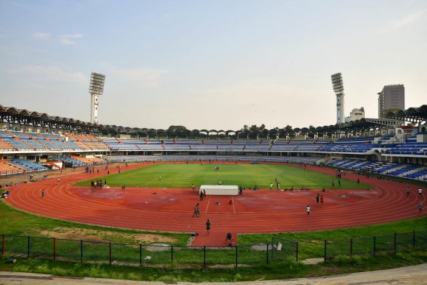
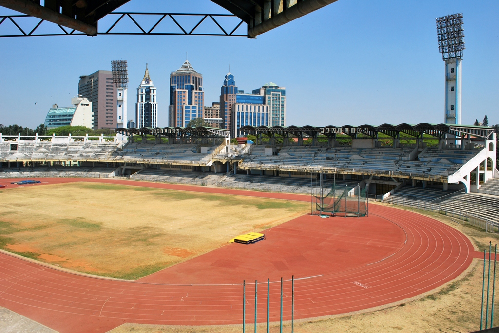
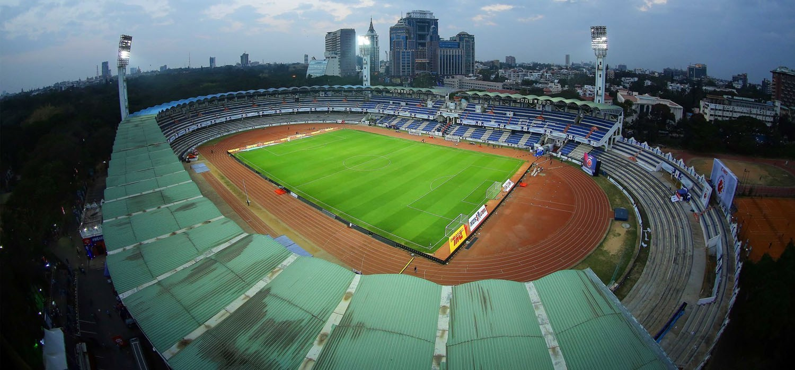

Kanteerva Outdoor Stadium

Synonymous with Bangalore's rich sporting heritage and cultural identity, the iconic Kanteerva outdoor stadium was constructed in the early 1990's, immediately following the completion of the Aditi project. This remarkable facility holds the distinction of being one of Bangalore's pioneering implementations of slip form construction technology, showcasing the city's commitment to innovative architectural solutions.
The stadium's architectural design incorporates several distinctive and technically advanced features that set it apart. These include elegantly designed butterfly arches that create a striking visual impact while providing structural stability, and sophisticated slip form lighting towers that ensure optimal illumination for evening events while maintaining aesthetic appeal.
As Karnataka's premier athletic venue, this prestigious facility has become the preferred location for hosting the state's most significant athletic competitions and sporting events, cementing its position as a cornerstone of Karnataka's sporting infrastructure. The stadium's enduring legacy continues to inspire athletes and serve as a symbol of sporting excellence in the region.



